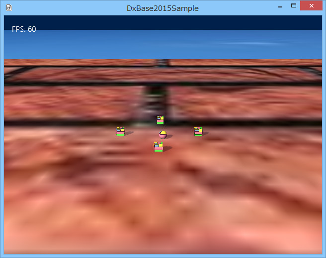

図1008a
ここで、プレイヤーを動かして、壁模様の外に出てみましょう。
void SeekObject::Create(){
//中略
auto PtrRegid = AddComponent<Rigidbody>();
//壁を作成（時計回りの3点で定義する面）
vector<Plane> PlaneVec;
PlaneVec.push_back(Plane(Vector3(0, 0, 20.0f),
Vector3(0, 10.0f, 20.0f), Vector3(10.0f, 0, 20.0f)));
PlaneVec.push_back(Plane(Vector3(-20.0f, 0, 0),
Vector3(-20.0f, 10.0f, 0), Vector3(-20.0f, 0, 10.0f)));
PlaneVec.push_back(Plane(Vector3(20.0f, 0, 0),
Vector3(20.0f, 10.0f, 0), Vector3(20.0f, 0, -10.0f)));
PlaneVec.push_back(Plane(Vector3(0, 0, -20.0f),
Vector3(0, 10.0f, -20.0f), Vector3(-10.0f, 0, -20.0f)));
//壁回避をつける
auto WallAvoidancePtr = AddComponent<WallAvoidanceSteering>();
WallAvoidancePtr->SetPlaneVec(PlaneVec);
//中略
}
void SeekObject::Update2(){
//壁の奥にいっていたら、他の操舵は無効とする
auto WallAvoidancePtr = GetComponent<WallAvoidanceSteering>();
if (WallAvoidancePtr->IsWallArribed()){
auto PtrSeek = GetComponent<SeekSteering>();
PtrSeek->SetUpdateActive(false);
auto PtrArrive = GetComponent<ArriveSteering>();
PtrArrive->SetUpdateActive(false);
}
else{
//奥にいってなかったら本来の操舵を戻す
if (m_StateMachine->GetCurrentState() == FarState::Instance()){
auto PtrSeek = GetComponent<SeekSteering>();
PtrSeek->SetUpdateActive(true);
}
else if (m_StateMachine->GetCurrentState() == NearState::Instance()){
auto PtrArrive = GetComponent<ArriveSteering>();
PtrArrive->SetUpdateActive(true);
}
}
}